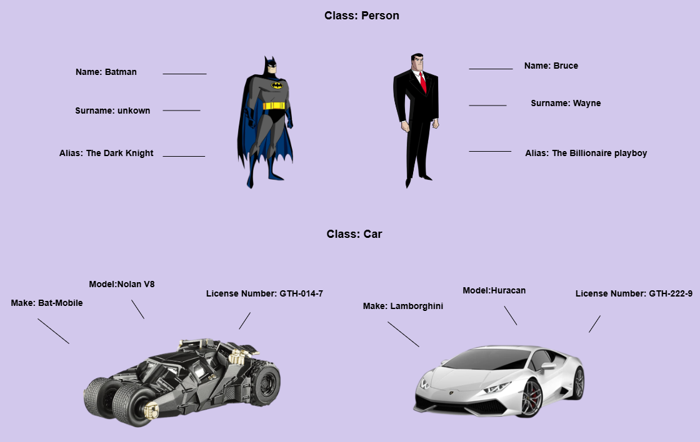
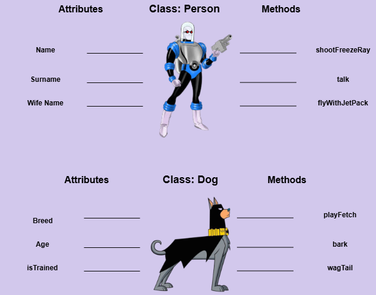

In Object-Oriented programming (OOP), a class is a blueprint that defines the characteristics and
behaviors of an object. Objects are the fundamental units of data in OOP. They help us store data and
perform actions on that data. An object can be anything, e.g, a Person, Car or Animal are examples of objects.
But an object cannot exist without a blueprint or a mold that shapes that object into existence. A class is that
blueprint or Mold that gives life to our objects.
Let us look at some examples:

As you can see in the diagram, Batman and Bruce Whayne are part of the same Class, Person. The BatMobile and
Lamborghini are part of the same Car class as well. Each item can be unique in it's class category, but all
items of created from either class, Person or Car, will have the same characteristics and behaviour.
Attributes and Methods
In Object-Oriented programming, we refer to the characteristics of a class as Attributes and the behavior of the
class as Methods. Both are used to:
Distinguish different types of classes
Persist the state of a class (Attributes)
Define actions to perform at each state (Methods)
Let us look at some examples:

The two classes represent two different objects, a Person and a Dog. Each Class has unique Attributes and Methods
that help differentiate the class. For Example, The Person class has a Wife Name attribute and talk method.
While the Dog class has a breed attribute and bark method. Thus we see the important role that Attributes and Methods play in shaping the class.